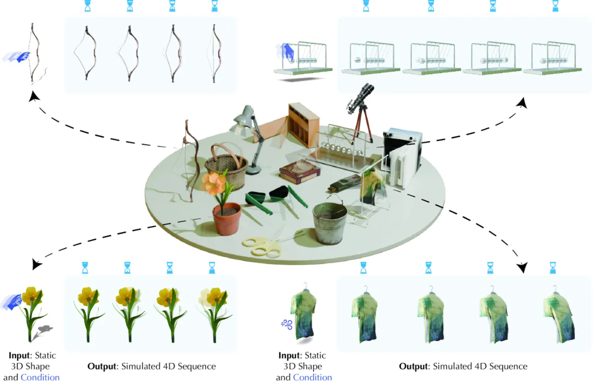
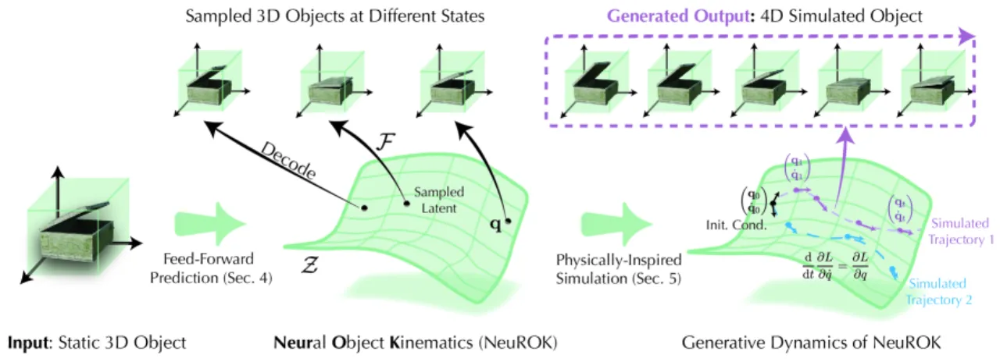
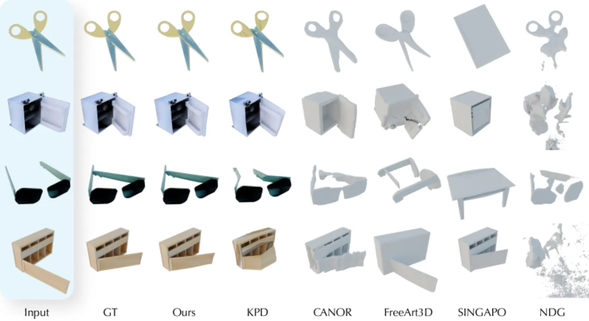
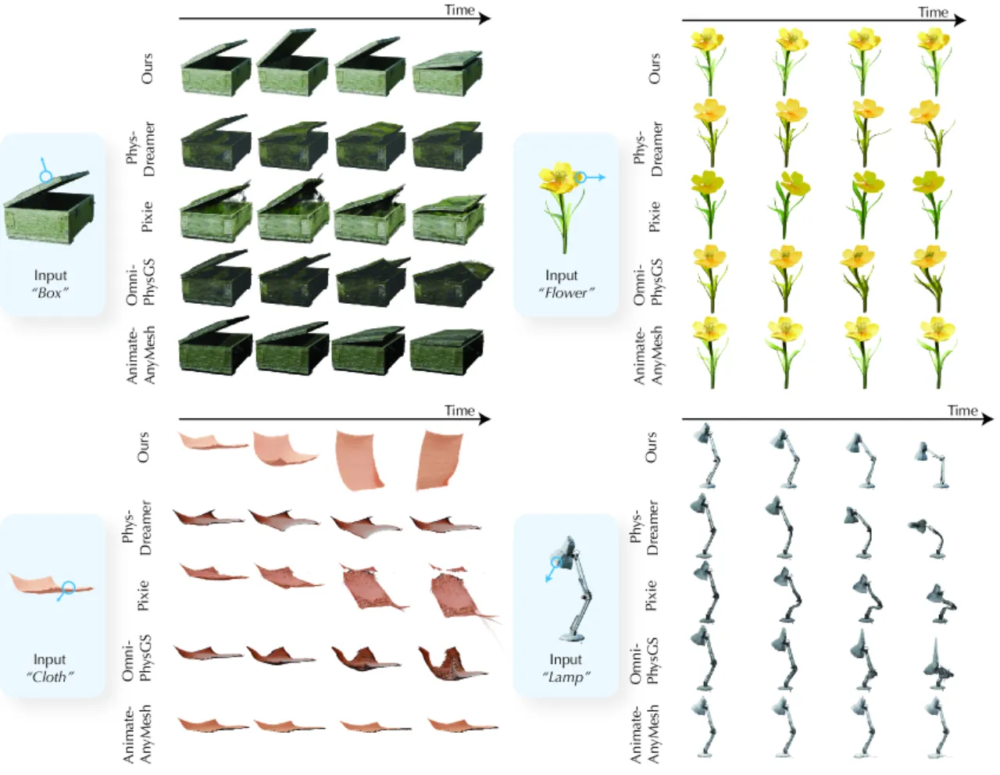
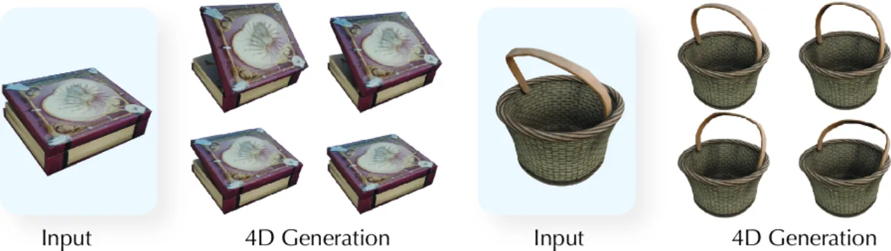

NeuROK 提出了一种数据驱动的"运动学状态参数化"方法，通过学习一个表示物体所有可能状态的潜空间，并配合物理启发的 Lagrangian 动力学方程，在无需类别特定物理标注的前提下，实现对弹性体、布料、铰接体等各类动态物体的 4D 仿真生成。
现有的 4D 动态生成方法大多依赖预定义的物理模型，通过系统辨识估计参数——这将方法局限于特定类别，且难以扩展到大规模数据。NeuROK 的核心洞见是：通过学习"数据驱动的运动学状态参数化"，可以突破这些限制。
"Given a 3D geometric snapshot of a dynamic object, humans can intuitively imagine how the object would react under different physical conditions, even without precise knowledge of the governing physical equations."

NeuROK 的核心思路是：先学习一个低维潜空间（即"神经运动学状态参数化"），再在此潜空间中用 Lagrangian 力学方程驱动动力学演化——将高维顶点空间的问题降维到低维广义坐标空间。

以静态 3D mesh 为输入，输出该实例的运动学先验分布。采用 Perceiver 架构（可学习 token + 交叉注意力 + 自注意力），位置编码跟随 3DShape2Vecset，天然支持可变数量的顶点，具备良好的可扩展性。
在条件 mesh 基础上，对变形场编码为后验分布参数。顶点变形通过 dual quaternions（双四元数） 参数化，再经重心插值映射至采样点，有效捕捉旋转主导的变形（如铰接体关节转动）。
从采样的潜向量解码为变形 mesh：在输入 mesh 表面采样查询点，经自注意力和交叉注意力处理潜 token，MLP 预测变形向量，最终通过加权平均驱动 mesh 顶点。
学到的潜空间充当广义坐标（generalized coordinates），在此低维空间中求解 Euler-Lagrange 方程：
其中 G(z) 为广义质量矩阵，C(z,ż) 为科里奥利项，∇_z V 为势能梯度。该公式维持能量守恒等物理一致性，同时无需为每类物体手动定义物理约束。
采用条件 VAE 目标函数，在大规模 4D 数据集上联合训练三个模型：
训练仅需 4D 几何轨迹（变形 mesh 序列），无需物理参数标注或动作标注。训练数据涵盖从现有工作和物理仿真中整合的大规模 4D 数据集，覆盖弹性体、布料、铰接体、刚体、连续体等多类别。
实验从两个维度评估 NeuROK：（1）逆运动学——给定目标形状，找到潜编码使重建最优；（2）生成式 4D 仿真——在不同物理条件下生成时序动态序列。用户研究共邀请 105 名参与者。
| 方法 | Chamfer (L1) ↓ | Chamfer (L2) ↓ | IoU ↑ |
|---|---|---|---|
| KeyPointDeformer | 0.067 | 0.067 | 0.570 |
| CANOR | 0.082 | 0.067 | 0.568 |
| NeuROK（本文） | 0.028 | 0.028 | 0.764 |

与三类基线方法对比：PhysDreamer（弹性体物理仿真）、OmniPhysGS（高斯溅射物理）、AnimateAnyMesh（mesh 动画）。评估指标包括用户研究（动作对齐度、运动真实性）、VBench AQ（视频质量）、WorldScore MM（多模态世界分数）。
| 方法 | 对齐度 ↑ | 真实性 ↑ | VBench AQ ↑ | WorldScore MM ↑ |
|---|---|---|---|---|
| PhysDreamer | 5.95% | 5.36% | 0.362 | 0.783 |
| OmniPhysGS | 1.67% | 0.48% | 0.380 | 0.544 |
| AnimateAnyMesh | 5.83% | 6.67% | 0.450 | 0.889 |
| NeuROK（本文） | 81.43% | 83.33% | 0.483 | 2.343 |

对三个关键设计组件进行消融，均在逆运动学任务上评估：
| 配置 | Chamfer L1 ↓ | Chamfer L2 ↓ | IoU ↑ |
|---|---|---|---|
| NeuROK 完整版 | 0.028 | 0.028 | 0.764 |
| 去除模型降维（w/o Model Reduction） | 0.045 | 0.059 | 0.711 |
| 去除数据增强（w/o Data Aug） | 0.036 | 0.041 | 0.724 |
| 去除双四元数（w/o Dual-Quat） | 0.033 | 0.037 | 0.728 |

此外，NeuROK 可直接对真实世界扫描获得的 3D 物体进行仿真（Figure 7），无需针对扫描物体进行特殊适配，体现了框架的实用性。
NeuROK 从大规模 4D 数据集学习运动学先验。对于与训练分布差异极大的物体（如极端拓扑形变、流体类物体），潜空间的表达能力可能受限。虽然论文展示了对未见类别的泛化（Figure 9），但泛化边界尚未被系统性验证。
将外部物理条件（力、初始速度、动作）接入系统的方式是通过优化初始运动学状态 (z₀, ż₀) 以匹配指定粒子的位置和速度。这一接口在面对高度不确定性的物理输入或缺乏明确锚点的场景时，行为尚不清晰。
NeuROK 以 3D mesh 为输入输出，对于以高斯溅射（3DGS）或神经辐射场（NeRF）表示的场景，需要额外的格式转换步骤，与直接操作渲染表示的方法（如 PhysDreamer、OmniPhysGS）相比，端到端流程稍显复杂。
论文结论原文："Our work opens up promising future research directions and introduces a new research paradigm in 4D visual generation." 这意味着若干开放问题（如更精细的物理接口、更大规模训练数据、与渲染管线的深度集成）有待后续工作探索。